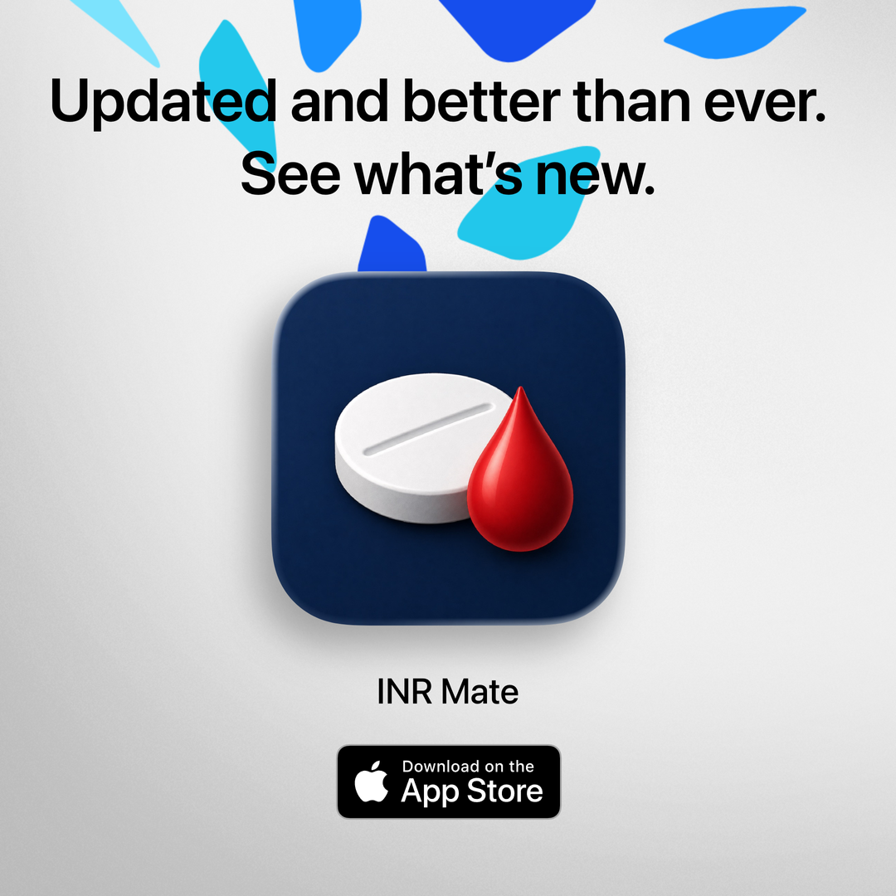

12 June 2026 · INR Mate update
INR Mate v1.2 adds Siri and Shortcuts support
INR Mate v1.2 is now live, adding Siri and Shortcuts support to make everyday INR and warfarin logging even quicker.

INR Mate v1.2 adds Siri and Shortcuts support, making it quicker to record key anticoagulation information without digging through the app every time.
The update includes shortcuts for logging an INR reading, recording today's saved warfarin dose, checking your latest INR, and reviewing today's recorded dose.
Siri and Shortcuts support is available to all INR Mate users because fast logging should not sit behind a paywall. The easier it is to keep records up to date, the more useful those records become.
This update also continues the wider goal for INR Mate: keeping warfarin tracking simple, private and practical across everyday Apple devices.